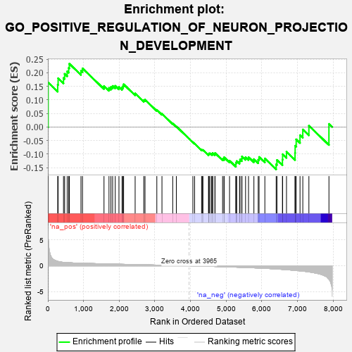
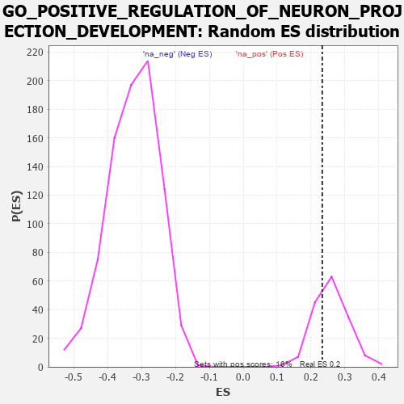

| | | Dataset | 7d |
| Phenotype | NoPhenotypeAvailable |
| Upregulated in class | na_pos |
| GeneSet | GO_POSITIVE_REGULATION_OF_NEURON_PROJECTION_DEVELOPMENT |
| Enrichment Score (ES) | 0.23336683 |
| Normalized Enrichment Score (NES) | 0.8953697 |
| Nominal p-value | 0.7080745 |
| FDR q-value | 0.8452282 |
| FWER p-Value | 1.0 |
Table: GSEA Results Summary

Fig 1: Enrichment plot: GO_POSITIVE_REGULATION_OF_NEURON_PROJECTION_DEVELOPMENT
Profile of the Running ES Score & Positions of GeneSet Members on the Rank Ordered List
| PROBE | GENE SYMBOL | GENE_TITLE | RANK IN GENE LIST | RANK METRIC SCORE | RUNNING ES | CORE ENRICHMENT | | 1 | SYT2 | | | 8 | 5.577 | 0.1642 | Yes |
| 2 | HGF | | | 276 | 0.870 | 0.1562 | Yes |
| 3 | SHOX2 | | | 288 | 0.842 | 0.1798 | Yes |
| 4 | RRN3 | | | 438 | 0.667 | 0.1807 | Yes |
| 5 | LRP1 | | | 470 | 0.648 | 0.1960 | Yes |
| 6 | SRF | | | 542 | 0.615 | 0.2052 | Yes |
| 7 | DDX56 | | | 584 | 0.600 | 0.2178 | Yes |
| 8 | FBXW8 | | | 601 | 0.594 | 0.2334 | Yes |
| 9 | SF3A2 | | | 928 | 0.500 | 0.2069 | No |
| 10 | DVL3 | | | 971 | 0.490 | 0.2161 | No |
| 11 | FZD1 | | | 1574 | 0.379 | 0.1512 | No |
| 12 | TRAK1 | | | 1714 | 0.354 | 0.1441 | No |
| 13 | LLPH | | | 1768 | 0.343 | 0.1475 | No |
| 14 | FMR1 | | | 1816 | 0.334 | 0.1515 | No |
| 15 | PAK3 | | | 1889 | 0.322 | 0.1519 | No |
| 16 | ROR1 | | | 1993 | 0.306 | 0.1479 | No |
| 17 | LRRC7 | | | 2080 | 0.294 | 0.1457 | No |
| 18 | BMP7 | | | 2107 | 0.290 | 0.1510 | No |
| 19 | ISLR2 | | | 2124 | 0.287 | 0.1575 | No |
| 20 | KDM1A | | | 2447 | 0.237 | 0.1238 | No |
| 21 | DSCAM | | | 2689 | 0.200 | 0.0992 | No |
| 22 | SLIT2 | | | 2724 | 0.195 | 0.1007 | No |
| 23 | FEZ1 | | | 3055 | 0.142 | 0.0632 | No |
| 24 | TWF1 | | | 3199 | 0.123 | 0.0487 | No |
| 25 | FES | | | 3501 | 0.077 | 0.0129 | No |
| 26 | STK25 | | | 3602 | 0.059 | 0.0020 | No |
| 27 | ROBO2 | | | 4066 | -0.018 | -0.0560 | No |
| 28 | MTOR | | | 4114 | -0.025 | -0.0613 | No |
| 29 | SYT17 | | | 4310 | -0.061 | -0.0841 | No |
| 30 | OPA1 | | | 4330 | -0.065 | -0.0846 | No |
| 31 | FIG4 | | | 4348 | -0.068 | -0.0847 | No |
| 32 | MOB2 | | | 4504 | -0.095 | -0.1015 | No |
| 33 | ILK | | | 4510 | -0.096 | -0.0993 | No |
| 34 | NPTN | | | 4519 | -0.098 | -0.0974 | No |
| 35 | NTRK2 | | | 4543 | -0.104 | -0.0972 | No |
| 36 | SYT4 | | | 4590 | -0.116 | -0.0996 | No |
| 37 | DLG5 | | | 4619 | -0.121 | -0.0996 | No |
| 38 | RAB21 | | | 4620 | -0.122 | -0.0960 | No |
| 39 | LIMK1 | | | 4684 | -0.136 | -0.0999 | No |
| 40 | PTK7 | | | 4687 | -0.136 | -0.0961 | No |
| 41 | MARK2 | | | 4899 | -0.177 | -0.1176 | No |
| 42 | FZD4 | | | 4940 | -0.186 | -0.1171 | No |
| 43 | EP300 | | | 4941 | -0.186 | -0.1116 | No |
| 44 | ITSN1 | | | 5094 | -0.222 | -0.1242 | No |
| 45 | RIMS2 | | | 5272 | -0.265 | -0.1388 | No |
| 46 | EPHA4 | | | 5273 | -0.265 | -0.1309 | No |
| 47 | MAGI2 | | | 5295 | -0.269 | -0.1256 | No |
| 48 | CPNE9 | | | 5374 | -0.289 | -0.1269 | No |
| 49 | DLG4 | | | 5388 | -0.293 | -0.1199 | No |
| 50 | CUX1 | | | 5437 | -0.304 | -0.1170 | No |
| 51 | IST1 | | | 5442 | -0.305 | -0.1084 | No |
| 52 | FGFR1 | | | 5543 | -0.332 | -0.1112 | No |
| 53 | ROR2 | | | 5626 | -0.353 | -0.1112 | No |
| 54 | VAMP7 | | | 5777 | -0.399 | -0.1183 | No |
| 55 | VLDLR | | | 5898 | -0.434 | -0.1207 | No |
| 56 | STK11 | | | 5922 | -0.443 | -0.1105 | No |
| 57 | DBNL | | | 6084 | -0.501 | -0.1160 | No |
| 58 | CDKL3 | | | 6401 | -0.618 | -0.1377 | No |
| 59 | PTPRD | | | 6423 | -0.629 | -0.1217 | No |
| 60 | ROBO1 | | | 6577 | -0.699 | -0.1204 | No |
| 61 | ARF1 | | | 6583 | -0.701 | -0.1002 | No |
| 62 | PAK1 | | | 6691 | -0.757 | -0.0913 | No |
| 63 | LRP8 | | | 6931 | -0.889 | -0.0953 | No |
| 64 | SNX3 | | | 6934 | -0.893 | -0.0691 | No |
| 65 | DNM1L | | | 6963 | -0.913 | -0.0456 | No |
| 66 | CPNE5 | | | 7070 | -0.977 | -0.0300 | No |
| 67 | SYT1 | | | 7148 | -1.033 | -0.0092 | No |
| 68 | GRN | | | 7319 | -1.194 | 0.0047 | No |
| 69 | FYN | | | 7881 | -2.622 | 0.0114 | No |
Table: GSEA details [plain text format]

Fig 2: GO_POSITIVE_REGULATION_OF_NEURON_PROJECTION_DEVELOPMENT: Random ES distribution
Gene set null distribution of ES for GO_POSITIVE_REGULATION_OF_NEURON_PROJECTION_DEVELOPMENT